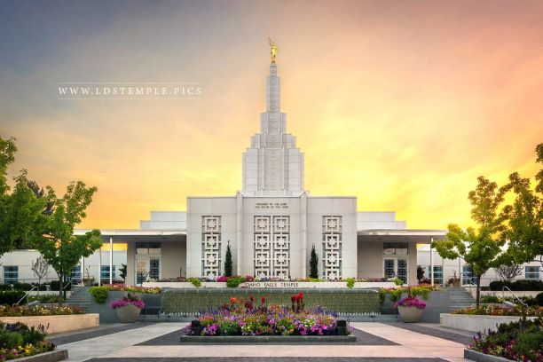

The Idaho Falls Temple
by Emma St. John
Standing on the banks of the Snake River, just above the cascading waters for which the city is named, the gleaming white Idaho Falls Idaho Temple serves as a centerpiece to the city. Just east of the temple is a gorgeous waterfall feature and public visitors' center featuring films, displays, multimedia presentations, and an awe-inspiring reproduction of Thorvaldsen's Christus statue. A stake center and parking lot occupy the property just south of the temple on the former site of an LDS Hospital.